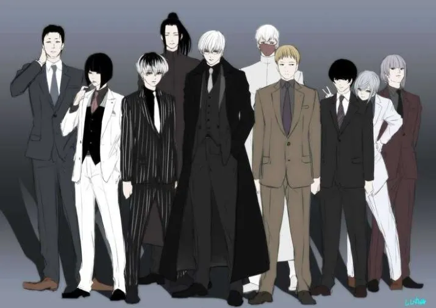

Facciones Principales
| Hechiceros | Magos registrados que operan en agencias, desde novatos hasta directores, protegiendo la magia y sirviendo al orden mundial. |
 |
| Brujos | Magos criminales perseguidos y aislados por la sociedad mágica, sin apoyo ni derechos, viven ocultos o en alianzas clandestinas. |
 |
| Cuerpo de seguridad mágica (CSM). | Organización oculta que supervisa, regula y controla la magia mundial, actuando como juez y guardián del secreto mágico. |
 |
Facciones Secundarias
| Sociedad Del Bosque | Alianza de elfos y hadas que protegen la naturaleza bajo el mando de la reina hada Lilith, manteniendo el equilibrio natural. |
 |
| Reino De Atlantis | Monarquía submarina que agrupa a seres marinos con éter, aliada con dragones pero reacia a negociar con humanos. |
|
| Tribu del sur | Estirpe poderosa y pacífica que gobierna amplias tierras mágicas, protegiendo especies y manteniendo alianzas estratégicas. |
 |